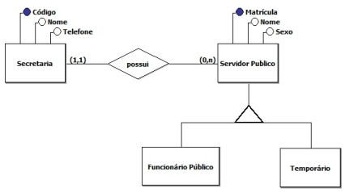
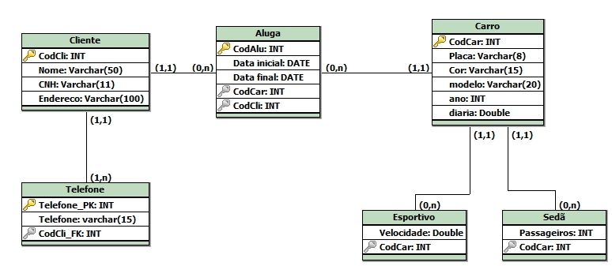

Em engenharia de software, um modelo entidade relacionamento é um modelo de dados para descrever os dado ou aspectos de informação de um domínio de negócio ou seus requisitos de processo, de uma maneira abstrata que em última análise se presta a ser implementada em um banco de dados, como um banco de dados relacional.
O 'MER' foi desenvolvido por Peter Chen e publicado em um artigo de 1976. Entretanto, variantes da ideia existiram anteriormente e, posteriormente, foram imaginadas como entidades de dados de supertipo e subtipo e relacionamentos de uniformização.
 Modelo Lógico RelacionalO modelo relacional é um modelo de dados representativo (ou de implementação), adequado a ser o modelo subjacente de um Sistema Gerenciador de Banco de Dados (SGBD), que se baseia no princípio de que todos os dados estão armazenados em tabelas (ou, matematicamente falando, relações). Toda sua definição é teórica e baseada na lógica de predicados e na teoria dos conjuntos.
O conceito foi criado por Edgar Frank Codd em 1970, sendo descrito no artigo "Relational Model of Data for Large Shared Data Banks". Na verdade, o modelo relacional foi o primeiro modelo de dados descrito teoricamente, os bancos de dados já existentes passaram então a ser conhecidos como (modelo hierárquico, modelo em rede ou Codasyl e modelo de listas invertidas).
NormalizaçãoNormalização de banco de dados é um conjunto de regras que visa, principalmente, a organização de um projeto de banco de dados para reduzir a redundância de dados, aumentar a integridade de dados e o desempenho.
Atualmente, muitos sistemas de informação ainda não utilizam banco de dados relacionais, sendo esses chamados de sistemas legados. Os dados desses sistemas são armazenados em arquivos de linguagens de terceira geração, como COBOL ou BASIC, ou então, em banco de dados da era pré-relacional.